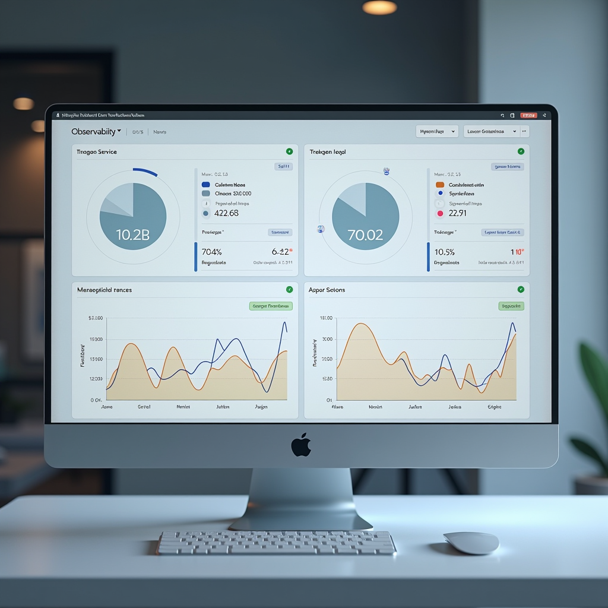

Implementing Comprehensive Monitoring and Observability in Modern Applications
A practical guide to establishing robust monitoring systems through the three pillars of observability—metrics, logs, and traces—with actionable strategies for effective alerting and meaningful service level objectives.

In today's complex digital environments, understanding system behavior is no longer optional—it's essential for maintaining reliable, performant applications. As systems grow increasingly distributed and interconnected, traditional monitoring approaches fall short. Organizations need comprehensive observability strategies that provide deep insights into system health, performance bottlenecks, and user experience impacts. This article explores practical approaches to implementing observability that actually works in production environments.
The shift from simple monitoring to full observability represents a fundamental change in how we understand our systems. Rather than merely tracking predefined metrics, observability enables teams to ask arbitrary questions about system behavior and receive meaningful answers. This capability becomes crucial when debugging complex issues in modern digital system flow, where problems often emerge from unexpected interactions between components.
Understanding the Three Pillars of Observability
The foundation of any observability strategy rests on three interconnected pillars: metrics, logs, and traces. Each pillar provides unique insights, and their true power emerges when they work together to paint a complete picture of system behavior. Understanding how these pillars complement each other is essential for building effective monitoring solutions.
Metricsprovide quantitative measurements of system behavior over time. They answer questions like "how many requests per second?" or "what's the average response time?" Metrics excel at showing trends and patterns, making them ideal for dashboards and alerting. In a responsive interface design context, metrics help track user interaction latency, rendering performance, and resource utilization. The key to effective metrics lies in choosing the right measurements—focus on metrics that directly correlate with user experience and business outcomes rather than vanity metrics that look impressive but provide little actionable insight.
Logscapture discrete events that occur within your system. They provide the narrative of what happened, when it happened, and often why it happened. Structured logging has revolutionized how we work with logs, transforming them from unstructured text into queryable data. Modern log aggregation systems enable powerful searches across distributed systems, helping teams quickly identify patterns and anomalies. When implementing logging, establish consistent formats across services, include relevant context in every log entry, and implement appropriate log levels to balance detail with volume.
Tracesfollow individual requests as they flow through distributed systems. They reveal the complete journey of a transaction, showing which services were involved, how long each step took, and where bottlenecks occurred. Distributed tracing becomes invaluable in microservices architectures where a single user action might trigger dozens of internal service calls. Traces help answer critical questions about seamless interaction between components and identify performance issues that metrics alone might miss.
Choosing the Right Observability Tools
The observability tool landscape has exploded in recent years, offering solutions ranging from open-source projects to comprehensive commercial platforms. The right choice depends on your specific needs, scale, and existing infrastructure. However, certain principles apply regardless of which tools you select.
Start by evaluating your current pain points. Are you struggling with slow boot times in your systems? Do you need better visibility into why certain services are running slow? Understanding your specific challenges helps narrow down tool options. For metrics collection, Prometheus has become the de facto standard in cloud-native environments, offering powerful querying capabilities and excellent integration with Kubernetes. Its pull-based model and dimensional data model make it particularly well-suited for dynamic, containerized environments.
For log aggregation, the ELK stack (Elasticsearch, Logstash, Kibana) remains popular, though alternatives like Loki offer more lightweight performance characteristics. Loki's approach of indexing only metadata rather than full log content can significantly reduce storage costs while maintaining query performance for most use cases. When selecting a logging solution, consider not just current log volume but projected growth—log data tends to grow faster than most teams anticipate.
Distributed tracing tools like Jaeger and Zipkin provide open-source options for implementing tracing, while commercial solutions like Datadog and New Relic offer integrated platforms combining all three pillars. The advantage of integrated platforms lies in their ability to correlate data across pillars—jumping from a metric spike to relevant logs to specific traces that show the problem. However, open-source solutions offer greater flexibility and can be more cost-effective at scale.
Consider also the operational overhead of running these tools. Open-source solutions require more hands-on management but offer complete control. Managed services reduce operational burden but come with ongoing costs and potential vendor lock-in. Many organizations adopt a hybrid approach, using managed services for critical production monitoring while running open-source tools for development and testing environments.
Establishing Effective Alerting Systems
Collecting observability data is only valuable if it drives action. Effective alerting transforms raw data into actionable insights, notifying teams when intervention is needed. However, poorly configured alerts create more problems than they solve, leading to alert fatigue and missed critical issues.
The foundation of good alerting is understanding the difference between symptoms and causes. Alert on symptoms—things users actually experience—rather than potential causes. For example, alert when API response times exceed acceptable thresholds (symptom) rather than when CPU usage is high (potential cause). This approach ensures alerts correlate with actual user impact and reduces false positives from benign internal fluctuations.
Implement alert severity levels that reflect actual urgency. Critical alerts should wake someone up at 3 AM because they indicate active user impact requiring immediate intervention. Warning alerts indicate degraded performance that needs attention during business hours. Info alerts provide awareness of unusual but non-critical conditions. Many teams make the mistake of marking too many alerts as critical, leading to alert fatigue where teams start ignoring notifications.
Use alert aggregation and deduplication to prevent notification storms. When a major incident occurs, dozens of related alerts might fire simultaneously. Smart aggregation groups related alerts together, providing context while reducing noise. Implement alert dependencies so that downstream alerts are suppressed when upstream components fail—if your database is down, you don't need separate alerts for every service that can't connect to it.
Build runbooks for common alerts. When an alert fires, responders should have clear guidance on investigation steps and potential remediation actions. Runbooks don't need to be exhaustive—they should provide enough context to start investigation efficiently. Include links to relevant dashboards, common troubleshooting queries, and escalation procedures. Treat runbooks as living documents, updating them based on actual incident experiences.
Defining Meaningful Service Level Objectives
Service Level Objectives (SLOs) provide the framework for measuring and maintaining system reliability. They define what "good enough" looks like for your services, balancing user expectations with engineering effort. Well-crafted SLOs guide decision-making about where to invest in reliability improvements and when to focus on feature development instead.
Start by identifying Service Level Indicators (SLIs)—the metrics that best represent user experience. Common SLIs include request latency, error rate, and system throughput. For a modern digital experience, you might track page load times, API response latencies, or transaction success rates. Choose SLIs that users actually care about—internal metrics like CPU usage or memory consumption rarely correlate directly with user satisfaction.
Once you've identified SLIs, set realistic SLOs that define acceptable performance. An SLO might state "99.9% of API requests should complete in under 200ms" or "99.95% of transactions should succeed without errors." The key word is "realistic"—aiming for 100% reliability is both impossible and counterproductive. Every additional nine in your reliability target (99% vs 99.9% vs 99.99%) roughly doubles the engineering effort required.
Implement error budgets based on your SLOs. If your SLO allows for 0.1% errors, that's your error budget—the amount of unreliability you can tolerate. When you're within budget, teams can move quickly and take calculated risks. When you've exhausted your error budget, focus shifts to reliability improvements. This framework provides objective criteria for balancing feature velocity with system stability.
Review and adjust SLOs regularly based on actual user feedback and business needs. SLOs should evolve as your system matures and user expectations change. What seemed like acceptable performance a year ago might no longer meet user needs. Conversely, you might discover that certain SLOs are unnecessarily strict, consuming engineering resources without corresponding user benefit.
Implementing Observability in Practice
Moving from theory to practice requires careful planning and incremental implementation. Start small, prove value, then expand. Attempting to instrument everything at once leads to overwhelming complexity and often fails to deliver meaningful results.
Begin with your most critical services—those that directly impact user experience or revenue. Implement basic metrics collection, structured logging, and distributed tracing for these services first. This focused approach lets you refine your observability strategy before rolling it out more broadly. It also demonstrates value quickly, building organizational support for broader implementation.
Standardize instrumentation across services. Create shared libraries or use existing instrumentation frameworks that make it easy for developers to add observability to new services. Consistency in how services are instrumented makes it much easier to understand system behavior and troubleshoot issues. Document instrumentation standards and provide examples that developers can follow.
Invest in dashboards that tell stories rather than just displaying data. A good dashboard answers specific questions: "Is the system healthy?" "Where are the bottlenecks?" "What changed recently?" Organize dashboards by user journey or business function rather than by technical component. This approach makes dashboards useful for both technical and non-technical stakeholders.
Build a culture of observability within your team. Encourage developers to use observability tools during development, not just in production. Make it easy to access logs, metrics, and traces in all environments. When incidents occur, conduct blameless post-mortems that focus on improving observability and system resilience rather than assigning fault. Over time, this cultural shift makes observability a natural part of how your team builds and operates systems.
Optimizing for Performance and Cost
Observability infrastructure itself can become a significant cost center and performance bottleneck if not managed carefully. The volume of telemetry data grows rapidly as systems scale, and processing this data requires substantial resources. Strategic optimization ensures observability remains valuable without becoming prohibitively expensive.
Implement intelligent sampling for high-volume data. You don't need to capture every single trace or log entry—sampling representative data often provides sufficient insight at a fraction of the cost. Use adaptive sampling that captures more data when problems occur and less during normal operation. For traces, implement tail-based sampling that keeps traces for slow or failed requests while sampling successful fast requests more aggressively.
Set appropriate retention policies for different data types. Detailed traces might only need retention for a few days, while aggregated metrics can be kept much longer. Implement tiered storage strategies that move older data to cheaper storage while keeping recent data readily accessible. Many organizations discover that 90% of their observability queries focus on the last 24 hours of data, making aggressive retention policies for older data a significant cost savings opportunity.
Monitor your monitoring systems. Observability infrastructure should itself be observable—track ingestion rates, query performance, storage utilization, and costs. Set up alerts for unusual spikes in telemetry volume that might indicate misconfigured instrumentation or actual system problems. Regular review of observability costs helps identify optimization opportunities before they become budget problems.
Consider the performance impact of instrumentation on your applications. While modern observability libraries are designed to be lightweight, excessive instrumentation can still impact application performance. Profile your instrumentation overhead and optimize hot paths. Sometimes, slightly less detailed telemetry that doesn't impact user experience is better than comprehensive instrumentation that slows down your application.
Key Takeaway:Comprehensive observability is not a one-time implementation but an ongoing practice that evolves with your systems. Start with the fundamentals—metrics, logs, and traces—choose tools that fit your needs and scale, establish meaningful SLOs that guide decision-making, and build a culture where observability is integral to how your team operates. The investment in robust observability pays dividends through faster incident resolution, better system understanding, and ultimately, improved user experience in your adaptive digital environments.